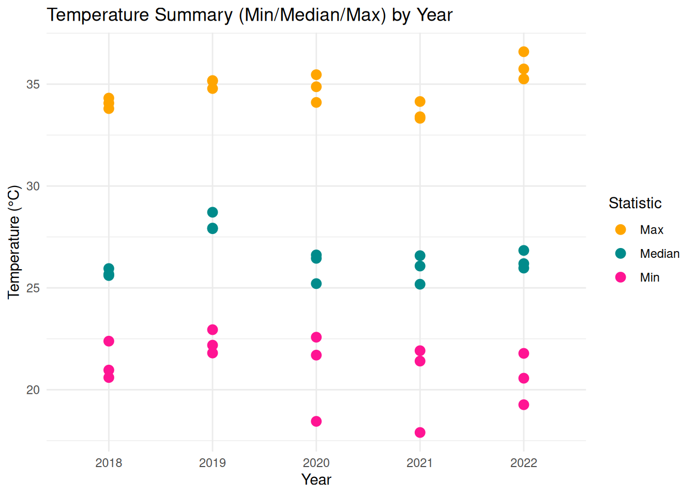
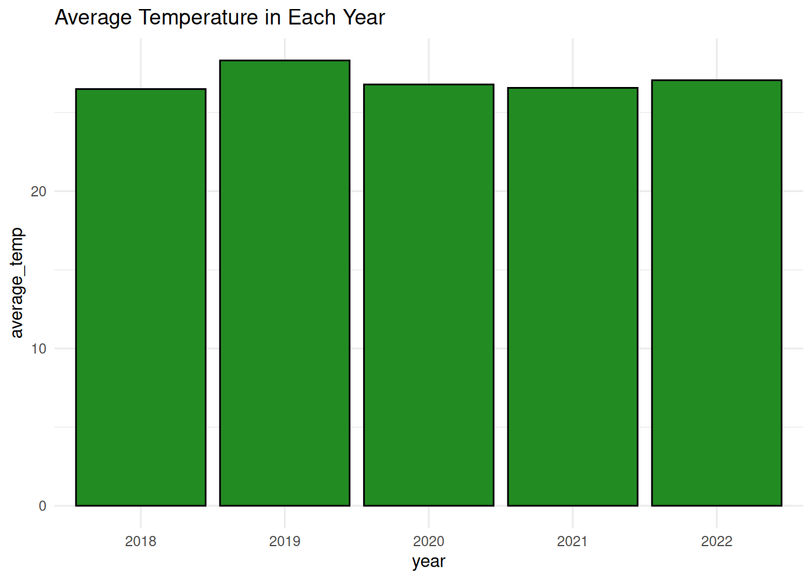
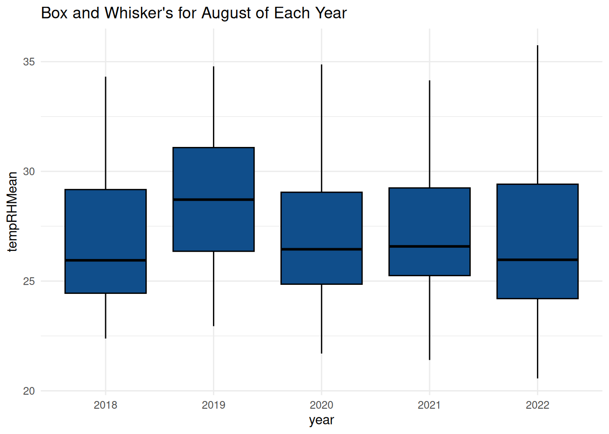

Introduction
Temperature data is important for understanding how Lake Barco’s ecosystem works because it affects plants, animals, and overall lake health. Water temperature influences plant growth, fish activity, and insect survival since these animals depend on the water to stay at the right body temperature. Each species in the lake has a temperature range it can tolerate, and if the water is too hot or cold, it can harm or even wipe out some species, disrupting the lake’s balance.
Warmer water also means less oxygen, which fish and insects need to survive. It can also trigger harmful algae growth that makes the water dangerous for plants and animals. By looking at temperature changes over time, scientists can figure out if the lake’s changes are due to climate change or human activities. This helps with conservation efforts by showing where action is needed to protect native species and maintain a healthy ecosystem. In short, understanding temperature patterns helps us care for Lake Barco and keep its plants and animals thriving.
Method
For this project, we used temperature data from the National Ecological Observatory Network (NEON), a large research program that collects environmental data from many places over time. NEON looks at things like climate, plants, and animals. We focused on temperature data from NEON’s Lake Barco site over the past five years.
The full dataset includes a lot of environmental measurements from different locations and times, so we made our analysis simpler by only looking at summer months June, July, and August. These months are important for studying how temperature affects plants and animals since warmer weather can have a big impact.
By narrowing the data to these three months, we made our analysis more manageable and still got useful insights about temperature trends at Lake Barco during recent summers. After filtering the data, we ended up with 17 files that were easier to handle and analyze while still providing valuable information.
The main package we’ll use is the tidyverse.
library(tidyverse)── Attaching core tidyverse packages ──────────────────────── tidyverse 2.0.0 ──
✔ dplyr 1.1.4 ✔ readr 2.1.5
✔ forcats 1.0.0 ✔ stringr 1.5.1
✔ ggplot2 3.5.1 ✔ tibble 3.2.1
✔ lubridate 1.9.3 ✔ tidyr 1.3.1
✔ purrr 1.0.2
── Conflicts ────────────────────────────────────────── tidyverse_conflicts() ──
✖ dplyr::filter() masks stats::filter()
✖ dplyr::lag() masks stats::lag()
ℹ Use the conflicted package (<http://conflicted.r-lib.org/>) to force all conflicts to become errorslibrary(dplyr)
library(ggplot2)
library(ggthemes)
library(tidyr)#Load in the tidyverse and csv files here.
June_2018 <- read_csv("NEON_temp-air-buoy/NEON.D03.BARC.DP1.20046.001.2018-06.basic.20240127T000425Z.RELEASE-2024/NEON.D03.BARC.DP1.20046.001.103.100.001.RHbuoy_1min.2018-06.basic.20231121T010114Z.csv")Rows: 43200 Columns: 10
── Column specification ────────────────────────────────────────────────────────
Delimiter: ","
dbl (7): tempRHMean, tempRHMinimum, tempRHMaximum, tempRHVariance, tempRHNu...
lgl (1): tempRHStdErMean
dttm (2): startDateTime, endDateTime
ℹ Use `spec()` to retrieve the full column specification for this data.
ℹ Specify the column types or set `show_col_types = FALSE` to quiet this message.#View(NEON_D03_BARC_DP1_20046_001_103_100_001_RHbuoy_1min_2018_06_basic_20231121T010114Z)
July_2018 <- read_csv("NEON_temp-air-buoy/NEON.D03.BARC.DP1.20046.001.2018-07.basic.20240127T000425Z.RELEASE-2024/NEON.D03.BARC.DP1.20046.001.103.100.001.RHbuoy_1min.2018-07.basic.20231121T034537Z.csv")Rows: 44640 Columns: 10
── Column specification ────────────────────────────────────────────────────────
Delimiter: ","
dbl (7): tempRHMean, tempRHMinimum, tempRHMaximum, tempRHVariance, tempRHNu...
lgl (1): tempRHStdErMean
dttm (2): startDateTime, endDateTime
ℹ Use `spec()` to retrieve the full column specification for this data.
ℹ Specify the column types or set `show_col_types = FALSE` to quiet this message.#View(NEON_D03_BARC_DP1_20046_001_103_100_001_RHbuoy_1min_2018_07_basic_20231121T034537Z)
August_2018 <- read_csv("NEON_temp-air-buoy/NEON.D03.BARC.DP1.20046.001.2018-08.basic.20240127T000425Z.RELEASE-2024/NEON.D03.BARC.DP1.20046.001.103.100.001.RHbuoy_1min.2018-08.basic.20231121T071648Z.csv")Rows: 44640 Columns: 10
── Column specification ────────────────────────────────────────────────────────
Delimiter: ","
dbl (7): tempRHMean, tempRHMinimum, tempRHMaximum, tempRHVariance, tempRHNu...
lgl (1): tempRHStdErMean
dttm (2): startDateTime, endDateTime
ℹ Use `spec()` to retrieve the full column specification for this data.
ℹ Specify the column types or set `show_col_types = FALSE` to quiet this message.#View(NEON_D03_BARC_DP1_20046_001_103_100_001_RHbuoy_1min_2018_08_basic_20231121T071648Z)
June_2019 <- read_csv("NEON_temp-air-buoy/NEON.D03.BARC.DP1.20046.001.2019-06.basic.20240127T000425Z.RELEASE-2024/NEON.D03.BARC.DP1.20046.001.103.100.001.RHbuoy_1min.2019-06.basic.20231121T100417Z.csv")Rows: 43200 Columns: 10
── Column specification ────────────────────────────────────────────────────────
Delimiter: ","
dbl (7): tempRHMean, tempRHMinimum, tempRHMaximum, tempRHVariance, tempRHNu...
lgl (1): tempRHStdErMean
dttm (2): startDateTime, endDateTime
ℹ Use `spec()` to retrieve the full column specification for this data.
ℹ Specify the column types or set `show_col_types = FALSE` to quiet this message.#View(NEON_D03_BARC_DP1_20046_001_103_100_001_RHbuoy_1min_2019_06_basic_20231121T100417Z)
July_2019 <- read_csv("NEON_temp-air-buoy/NEON.D03.BARC.DP1.20046.001.2019-07.basic.20240127T000425Z.RELEASE-2024/NEON.D03.BARC.DP1.20046.001.103.100.001.RHbuoy_1min.2019-07.basic.20231121T070109Z.csv")Rows: 44640 Columns: 10
── Column specification ────────────────────────────────────────────────────────
Delimiter: ","
dbl (7): tempRHMean, tempRHMinimum, tempRHMaximum, tempRHVariance, tempRHNu...
lgl (1): tempRHStdErMean
dttm (2): startDateTime, endDateTime
ℹ Use `spec()` to retrieve the full column specification for this data.
ℹ Specify the column types or set `show_col_types = FALSE` to quiet this message.#View(NEON_D03_BARC_DP1_20046_001_103_100_001_RHbuoy_1min_2019_07_basic_20231121T070109Z)
August_2019 <- read_csv("NEON_temp-air-buoy/NEON.D03.BARC.DP1.20046.001.2019-08.basic.20240127T000425Z.RELEASE-2024/NEON.D03.BARC.DP1.20046.001.103.100.001.RHbuoy_1min.2019-08.basic.20231121T105456Z.csv")Rows: 44640 Columns: 10
── Column specification ────────────────────────────────────────────────────────
Delimiter: ","
dbl (7): tempRHMean, tempRHMinimum, tempRHMaximum, tempRHVariance, tempRHNu...
lgl (1): tempRHStdErMean
dttm (2): startDateTime, endDateTime
ℹ Use `spec()` to retrieve the full column specification for this data.
ℹ Specify the column types or set `show_col_types = FALSE` to quiet this message.#View(NEON_D03_BARC_DP1_20046_001_103_100_001_RHbuoy_1min_2019_08_basic_20231121T105456Z)
June_2020 <- read_csv("NEON_temp-air-buoy/NEON.D03.BARC.DP1.20046.001.2020-06.basic.20240127T000425Z.RELEASE-2024/NEON.D03.BARC.DP1.20046.001.103.100.001.RHbuoy_1min.2020-06.basic.20231121T060743Z.csv")Rows: 43200 Columns: 10
── Column specification ────────────────────────────────────────────────────────
Delimiter: ","
dbl (7): tempRHMean, tempRHMinimum, tempRHMaximum, tempRHVariance, tempRHNu...
lgl (1): tempRHStdErMean
dttm (2): startDateTime, endDateTime
ℹ Use `spec()` to retrieve the full column specification for this data.
ℹ Specify the column types or set `show_col_types = FALSE` to quiet this message.#View(NEON_D03_BARC_DP1_20046_001_103_100_001_RHbuoy_1min_2020_06_basic_20231121T060743Z)
July_2020 <- read_csv("NEON_temp-air-buoy/NEON.D03.BARC.DP1.20046.001.2020-07.basic.20230127T120753Z.RELEASE-2024/NEON.D03.BARC.DP1.20046.001.103.100.001.RHbuoy_1min.2020-07.basic.20221201T073409Z.csv")Rows: 44640 Columns: 10
── Column specification ────────────────────────────────────────────────────────
Delimiter: ","
dbl (7): tempRHMean, tempRHMinimum, tempRHMaximum, tempRHVariance, tempRHNu...
lgl (1): tempRHStdErMean
dttm (2): startDateTime, endDateTime
ℹ Use `spec()` to retrieve the full column specification for this data.
ℹ Specify the column types or set `show_col_types = FALSE` to quiet this message.#View(NEON_D03_BARC_DP1_20046_001_103_100_001_RHbuoy_1min_2020_07_basic_20221201T073409Z)
August_2020 <- read_csv("NEON_temp-air-buoy/NEON.D03.BARC.DP1.20046.001.2020-08.basic.20230127T120753Z.RELEASE-2024/NEON.D03.BARC.DP1.20046.001.103.100.001.RHbuoy_1min.2020-08.basic.20221201T075109Z.csv")Rows: 44640 Columns: 10
── Column specification ────────────────────────────────────────────────────────
Delimiter: ","
dbl (7): tempRHMean, tempRHMinimum, tempRHMaximum, tempRHVariance, tempRHNu...
lgl (1): tempRHStdErMean
dttm (2): startDateTime, endDateTime
ℹ Use `spec()` to retrieve the full column specification for this data.
ℹ Specify the column types or set `show_col_types = FALSE` to quiet this message.#View(NEON_D03_BARC_DP1_20046_001_103_100_001_RHbuoy_1min_2020_08_basic_20221201T075109Z)
June_2021 <- read_csv("NEON_temp-air-buoy/NEON.D03.BARC.DP1.20046.001.2021-06.basic.20240127T000425Z.RELEASE-2024/NEON.D03.BARC.DP1.20046.001.103.100.001.RHbuoy_1min.2021-06.basic.20231121T033649Z.csv")Rows: 43200 Columns: 10
── Column specification ────────────────────────────────────────────────────────
Delimiter: ","
dbl (7): tempRHMean, tempRHMinimum, tempRHMaximum, tempRHVariance, tempRHNu...
lgl (1): tempRHStdErMean
dttm (2): startDateTime, endDateTime
ℹ Use `spec()` to retrieve the full column specification for this data.
ℹ Specify the column types or set `show_col_types = FALSE` to quiet this message.#View(NEON_D03_BARC_DP1_20046_001_103_100_001_RHbuoy_1min_2021_06_basic_20231121T033649Z)
July_2021 <- read_csv("NEON_temp-air-buoy/NEON.D03.BARC.DP1.20046.001.2021-07.basic.20240127T000425Z.RELEASE-2024/NEON.D03.BARC.DP1.20046.001.103.100.001.RHbuoy_1min.2021-07.basic.20231121T111657Z.csv")Rows: 44640 Columns: 10
── Column specification ────────────────────────────────────────────────────────
Delimiter: ","
dbl (7): tempRHMean, tempRHMinimum, tempRHMaximum, tempRHVariance, tempRHNu...
lgl (1): tempRHStdErMean
dttm (2): startDateTime, endDateTime
ℹ Use `spec()` to retrieve the full column specification for this data.
ℹ Specify the column types or set `show_col_types = FALSE` to quiet this message.#View(NEON_D03_BARC_DP1_20046_001_103_100_001_RHbuoy_1min_2021_07_basic_20231121T111657Z)
August_2021 <- read_csv("NEON_temp-air-buoy/NEON.D03.BARC.DP1.20046.001.2021-08.basic.20240127T000425Z.RELEASE-2024/NEON.D03.BARC.DP1.20046.001.103.100.001.RHbuoy_1min.2021-08.basic.20231121T050028Z.csv")Rows: 44640 Columns: 10
── Column specification ────────────────────────────────────────────────────────
Delimiter: ","
dbl (7): tempRHMean, tempRHMinimum, tempRHMaximum, tempRHVariance, tempRHNu...
lgl (1): tempRHStdErMean
dttm (2): startDateTime, endDateTime
ℹ Use `spec()` to retrieve the full column specification for this data.
ℹ Specify the column types or set `show_col_types = FALSE` to quiet this message.#View(NEON_D03_BARC_DP1_20046_001_103_100_001_RHbuoy_1min_2021_08_basic_20231121T050028Z)
June_2022 <- read_csv("NEON_temp-air-buoy/NEON.D03.BARC.DP1.20046.001.2022-06.basic.20240127T000425Z.RELEASE-2024/NEON.D03.BARC.DP1.20046.001.103.100.001.RHbuoy_1min.2022-06.basic.20231121T073712Z.csv")Rows: 43200 Columns: 10
── Column specification ────────────────────────────────────────────────────────
Delimiter: ","
dbl (7): tempRHMean, tempRHMinimum, tempRHMaximum, tempRHVariance, tempRHNu...
lgl (1): tempRHStdErMean
dttm (2): startDateTime, endDateTime
ℹ Use `spec()` to retrieve the full column specification for this data.
ℹ Specify the column types or set `show_col_types = FALSE` to quiet this message.#View(NEON_D03_BARC_DP1_20046_001_103_100_001_RHbuoy_1min_2022_06_basic_20231121T073712Z)
July_2022 <- read_csv("NEON_temp-air-buoy/NEON.D03.BARC.DP1.20046.001.2022-07.basic.20240127T000425Z.RELEASE-2024/NEON.D03.BARC.DP1.20046.001.103.100.001.RHbuoy_1min.2022-07.basic.20231120T225156Z.csv")Rows: 44640 Columns: 10
── Column specification ────────────────────────────────────────────────────────
Delimiter: ","
dbl (7): tempRHMean, tempRHMinimum, tempRHMaximum, tempRHVariance, tempRHNu...
lgl (1): tempRHStdErMean
dttm (2): startDateTime, endDateTime
ℹ Use `spec()` to retrieve the full column specification for this data.
ℹ Specify the column types or set `show_col_types = FALSE` to quiet this message.#View(NEON_D03_BARC_DP1_20046_001_103_100_001_RHbuoy_1min_2022_07_basic_20231120T225156Z)
August_2022 <- read_csv("NEON_temp-air-buoy/NEON.D03.BARC.DP1.20046.001.2022-08.basic.20240127T000425Z.RELEASE-2024/NEON.D03.BARC.DP1.20046.001.103.100.001.RHbuoy_1min.2022-08.basic.20231121T054901Z.csv")Rows: 44640 Columns: 10
── Column specification ────────────────────────────────────────────────────────
Delimiter: ","
dbl (7): tempRHMean, tempRHMinimum, tempRHMaximum, tempRHVariance, tempRHNu...
lgl (1): tempRHStdErMean
dttm (2): startDateTime, endDateTime
ℹ Use `spec()` to retrieve the full column specification for this data.
ℹ Specify the column types or set `show_col_types = FALSE` to quiet this message.#View(NEON_D03_BARC_DP1_20046_001_103_100_001_RHbuoy_1min_2022_08_basic_20231121T054901Z)June_2018 <- mutate(June_2018, month = "June", year = "2018")
July_2018 <- mutate(July_2018, month = "July", year = "2018")
August_2018 <- mutate(August_2018, month = "August", year = "2018")
June_2019 <- mutate(June_2019, month = "June", year = "2019")
July_2019 <- mutate(July_2019, month = "July", year = "2019")
August_2019 <- mutate(August_2019, month = "August", year = "2019")
June_2020 <- mutate(June_2020, month = "June", year = "2020")
July_2020 <- mutate(July_2020, month = "July", year = "2020")
August_2020 <- mutate(August_2020, month = "August", year = "2020")
June_2021 <- mutate(June_2021, month = "June", year = "2021")
July_2021 <- mutate(July_2021, month = "July", year = "2021")
August_2021 <- mutate(August_2021, month = "August", year = "2021")
June_2022 <- mutate(June_2022, month = "June", year = "2022")
July_2022 <- mutate(July_2022, month = "July", year = "2022")
August_2022 <- mutate(August_2022, month = "August", year = "2022")
buoy_data <- bind_rows(June_2018, June_2019, June_2020, June_2021, June_2022, July_2018, July_2019, July_2020, July_2021, July_2022, August_2018, August_2019, August_2020, August_2021, August_2022)Results
In our first graph, we create a scatter plot to visualize the minimum, maximum, and median temperatures recorded each year. Each data point on the plot corresponds to a specific year, showing the relationship and trends in these temperature metrics.
summary_data <- buoy_data %>%
group_by(year, month) %>%
summarize(
min_temp = min(tempRHMean, na.rm = TRUE),
median_temp = median(tempRHMean, na.rm = TRUE),
max_temp = max(tempRHMean, na.rm = TRUE)
)`summarise()` has grouped output by 'year'. You can override using the
`.groups` argument.long_summary_data <- summary_data %>%
pivot_longer(cols = c(min_temp, median_temp, max_temp),
names_to = "statistic",
values_to = "value")
ggplot(data = long_summary_data, aes(x = year, y = value, color = statistic)) +
geom_point(size = 3) +
scale_color_manual(
values = c("min_temp" = "deeppink", "median_temp" = "darkcyan", "max_temp" = "orange"),
labels = c("Max", "Median", "Min")
) +
labs(
title = "Temperature Summary (Min/Median/Max) by Year",
x = "Year",
y = "Temperature (°C)",
color = "Statistic"
) +
theme_minimal()
In our second graph, we present a bar graph showcasing the average temperatures for the months of June, July, and August across the five-year period from 2018 to 2022. Each bar represents the average temperature for a specific month within a given year, allowing us to observe seasonal patterns and inter-annual variability.
average_year_temp <- buoy_data %>%
group_by(year) %>%
summarise(average_temp = mean(tempRHMean, na.rm = TRUE))
ggplot(data = average_year_temp, mapping = aes(x = year, y = average_temp)) +
geom_col(fill= "forestgreen", color = "black") + ggtitle("Average Temperature in Each Year") + theme_minimal()
In our third graph, we use a box and whisker plot to visualize the average temperatures for the month of August across the seven years in our dataset (2018 to 2022). This type of plot offers insights into the distribution, variability, and central tendencies of the temperature data during August for each year.
AUG <- buoy_data %>%
filter(month == "August")
ggplot(data = AUG, mapping = aes(x = year, y = tempRHMean)) +
geom_boxplot(fill = "dodgerblue4", color = "black") + ggtitle("Box and Whisker's for August of Each Year") + theme_minimal()Warning: Removed 23295 rows containing non-finite outside the scale range
(`stat_boxplot()`).
Analysis
In 2019, temperatures went up a lot, making it the warmest year in our dataset. 2018 was also warmer than most other years. This is especially clear in our second graph, where 2019 stands out. Other graphs also show 2018 and 2019 as warmer years compared to the ones that came after. This pattern suggests that after these two warm years, temperatures seem to be decreasing, which could be a sign of a change in climate or environmental factors.
Conclusion
Temperature changes at Lake Barco in Florida are significantly influenced by two major climate patterns: El Niño and La Niña. These patterns originate in the Pacific Ocean and have far-reaching effects on the weather and environment of Florida. Understanding these patterns helps scientists and environmental experts better predict seasonal changes, protect wildlife, and manage local ecosystems.
El Niño occurs when the temperatures in the Pacific Ocean become warmer than average. This warming often brings wetter weather and increased rainfall to Florida. One reason for this is that stronger winds prevent storm systems from forming in the Atlantic Ocean, which can mean fewer hurricanes. In 2019, for example, the El Niño phase helped contribute to warmer temperatures at Lake Barco while also possibly reducing the frequency of hurricanes. This highlights how El Niño can change seasonal patterns and have important effects on the climate.
On the other hand, La Niña is the opposite climate pattern. It happens when the Pacific Ocean temperatures become cooler than average. These cooler temperatures typically result in drier conditions, which can sometimes cause droughts. Additionally, La Niña often leads to more intense and frequent hurricanes because there is less wind shear to break up developing storm systems. From 2020 to 2023, La Niña became more dominant and led to cooler temperatures at Lake Barco and an increase in hurricane activity. This demonstrates how La Niña affects local climate patterns by allowing storms to grow stronger and more destructive.
Understanding El Niño and La Niña is crucial not just for weather predictions but also for environmental management and community planning. Changes in temperature and rainfall can affect the health of the entire ecosystem in Lake Barco. For instance, fluctuations in temperature and water levels can impact fish populations, plant growth, and overall biodiversity. Healthy ecosystems support the plants and animals native to Lake Barco, which is vital for maintaining a balanced environment.